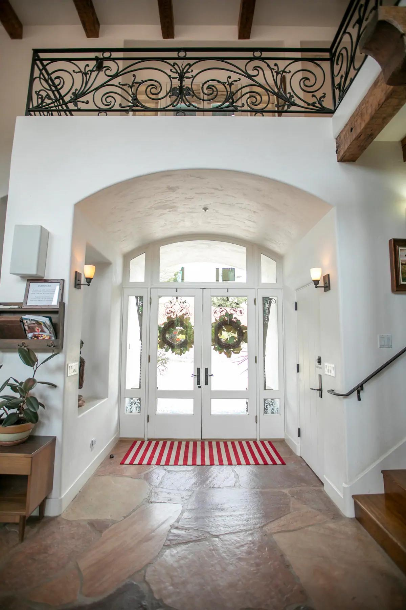

A one-week private retreat for emerging horror writers of color
SAFE SPACE
Your journey as a horror writer continues here.
The Safe Space Fellowship brings eight emerging horror writers of color to Sam White's private vineyard estate for five days of craft, mentorship, industry access, and the work only they can write.
- Duration
- 5 days
- Cohort
- 8 writers
- Location
- Private estate
About the Fellowship
Five days of focused writing, candid industry talks, group analyses, special guests, and private 1:1 mentorship.
This exclusive fellowship is designed for truly motivated writers ready to commit to a new way of thinking, a deeper relationship to fear, and a higher level of sacrifice.
Property subject to availability and change at host discretion. Certain areas may be restricted.
The Estate
A private vineyard property selected for focus, privacy, and total immersion.
Fellows stay on site for the full program, sharing meals, pages, screenings, and late-night conversations across the White-Duvall family estate. The distance is part of the design.





The Opportunity
One selected fellow will receive a development deal with Sam White Productions.
Accepted fellows will participate in generative writing sessions, cohort-based critique, industry conversations, private exercises, and evening gatherings designed to deepen their relationship to fear, story, and the work only they can write.
Participant Notes
- Accepted fellows must be available for the full duration of the retreat.
- Outside visitors are not permitted.
- Cell service may be limited. This is intentional.
- Participation requires signed release materials in perpetuity.
- Emotional distress may occur during mentorship, critique, private exercises, and breakthrough sessions.
Applications Closed
The inaugural cohort has been selected.
Applications for the current cohort are closed. To request project materials for SAFE SPACE, contact Trevor Zhou.
Request MaterialsAbout the Project
The Safe Space Fellowship is a fictional in-world artifact from SAFE SPACE, a horror-comedy thriller feature screenplay by Trevor Zhou.
SAFE SPACE follows emerging writers of color invited to a legendary horror producer's private vineyard retreat. They think they have finally gotten their big break. But as they are killed off one by one, they discover his celebrated career was built on sacrifice. Theirs.
This site is not a real fellowship, retreat, contest, employment opportunity, or development program.